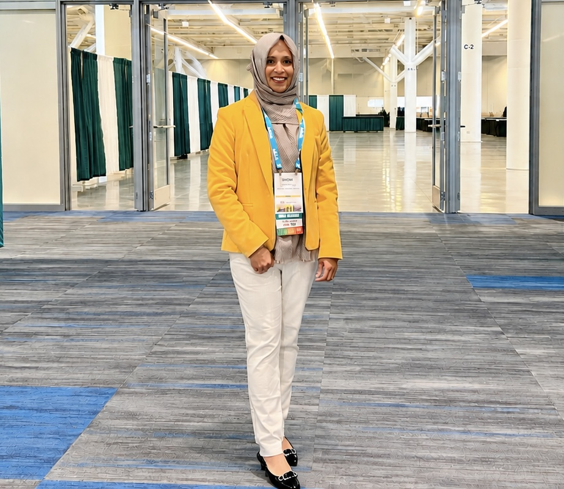
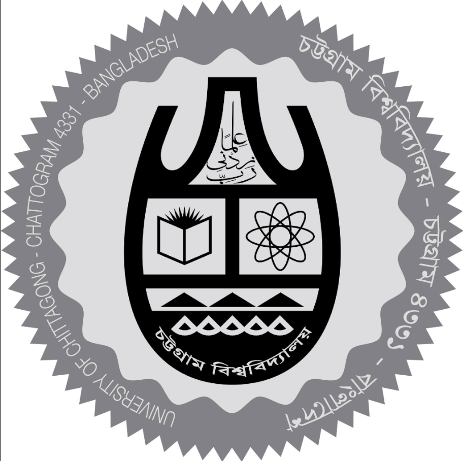
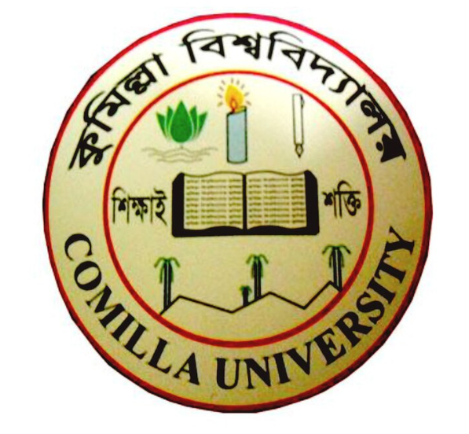

Deformable Fiber Transport
Pore-scale investigation of elongated and thread-like particles moving through periodic and random porous structures.
Pore-scale modeling
I develop mathematical and computational models for anomalous transport in heterogeneous porous media, with particular emphasis on deformable and elongated particles, stochastic upscaling, memory-dependent transport, and semi-analytical methods.

I am a Ph.D. candidate in Mathematics at The University of Alabama. My research lies at the intersection of applied mathematics, stochastic processes, transport phenomena, and scientific computing.
My current work focuses on anomalous transport of elongated and deformable particles in porous and perforated media. I use pore-scale modeling, Continuous Time Random Walk frameworks, non-Markovian memory kernels, first-passage-time analysis, and semi-analytical multipole methods to study transport across spatial and temporal scales.
My broader interests include numerical analysis, differential equations, mathematical modeling, stochastic processes, and computational methods for problems arising in environmental and physical systems.
My research connects microscopic particle–fluid–solid interactions with stochastic and continuum-scale descriptions of transport in geometrically complex media.
Pore-scale investigation of elongated and thread-like particles moving through periodic and random porous structures.

CTRW-based continuum models incorporating exponential, truncated power-law, and generalized-gamma waiting-time behavior.

Analysis of breakthrough curves, complementary breakthrough behavior, residence times, and geometry-dependent first-passage processes.
My teaching experience spans calculus, linear algebra, differential equations, mathematical methods, analysis, geometry, dynamics, and other undergraduate and graduate mathematics courses.
I emphasize mathematical reasoning, conceptual understanding, visual interpretation, and clear connections between analytical techniques and applications.
My academic teaching career includes instructor-of-record experience at The University of Alabama and previous faculty appointments in Bangladesh.
Graduate Teaching Assistant · Instructor of Record · 2022–Present

Assistant Professor · Department of Mathematics · 2018–2021

Lecturer · Assistant Professor · Department of Mathematics · 2011–2018
Lecturer · Department of Civil Engineering · 2010–2011
Faculty appointment included university-level mathematics instruction. Specific course titles are not listed in the current course record.
Department of Mathematics · The University of Alabama
Department of Mathematics · University of Chittagong
Department of Mathematics · Comilla University
Department of Mathematics · Comilla University
University of Information Technology and Sciences
View my complete curriculum vitae for education, publications, academic appointments, conference presentations, awards, mentoring, professional memberships, service, and technical experience.
Download Curriculum VitaeI welcome conversations about applied mathematics, anomalous transport, porous media, stochastic modeling, scientific computing, research collaborations, postdoctoral opportunities, and academic positions.